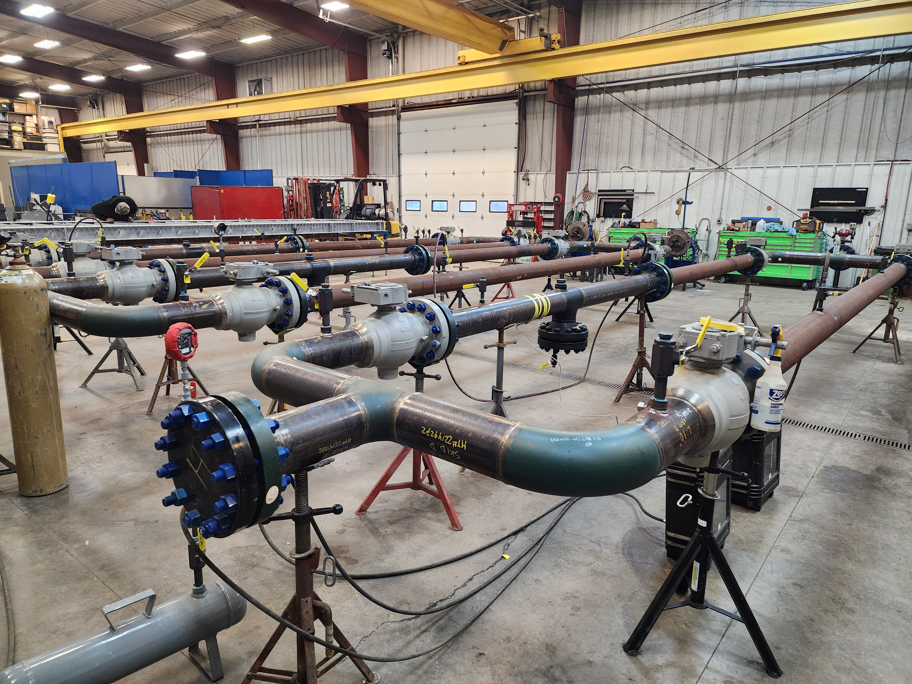
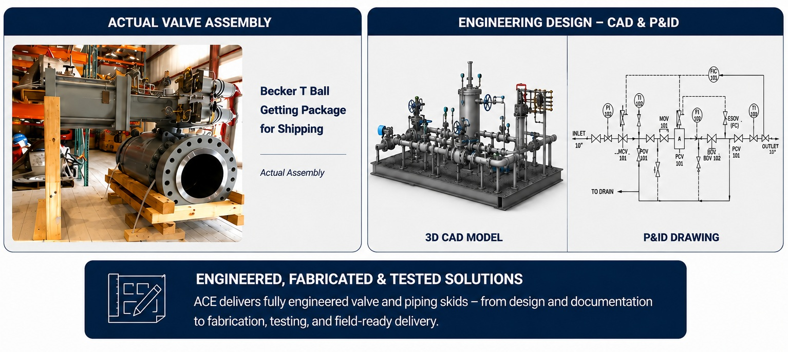

Valves & Actuation
Engineered Valve & Actuation Solutions
American Clean Energy LLC supplies, assembles, tests, documents, and delivers complete valve and actuation solutions for oil & gas, energy, utility, and industrial applications. From individual valves and actuators to fully integrated skid-mounted systems, ACE provides the products, technical expertise, and project support required to reduce installation time and simplify field execution.
American Clean Energy LLC supplies, assembles, tests, services, and delivers complete valve and actuator solutions for oil & gas, energy, utility, and industrial applications.
Products & Services
- Ball Valves
- Gate Valves
- Globe Valves
- Check Valves
- Control Valves
- Butterfly Valves
- Pressure Relief Valves
- Pneumatic Actuators
- Electric Actuators
- Hydraulic Actuators
Capabilities
- Valve Procurement
- Valve Assembly & Testing
- Bench Set & Stop Adjustment
- Hydrostatic Testing
- Inspection & Documentation
- Field Support
- Storage & Logistics
- Turnkey Valve Packages
Complete Buy-to-Install Valve Solutions
ACE provides a complete start-to-finish valve and actuation solution. We can support the customer from equipment selection and procurement through assembly, testing, documentation, storage, shipment, and startup support.
Our valve services can include actuator assembly, bench setting, stop adjustment, operational testing, ball and seat inspection, hydrostatic testing, CAD drawings, test documentation, storage, loading, offloading, and delivery coordination.
Engineered Valve Packages
For larger projects, ACE can provide pre-assembled valve and actuator packages, skid-mounted piping and valve assemblies, and field-ready packages that are painted, capped, tested, documented, and ready for installation.
Why Choose ACE
- Single point of contact for valve procurement, assembly, testing, and delivery
- Support for individual components and complete engineered packages
- Shop and field service options through ACE and its connected partners
- Documentation packages to support project requirements
- Solutions designed to reduce field labor and downtime
Engineering, Assembly, Testing & Project Delivery
American Clean Energy LLC provides complete engineering, procurement, assembly, factory acceptance testing (FAT), documentation, and project delivery for valve and actuation systems.
Whether supplying individual valves and actuators or fully integrated skid-mounted packages, ACE delivers field-ready solutions that reduce installation time, improve quality, simplify startup, and provide a single source of responsibility for every project.

Pre-Fabricated Valve & Regulation Skid

Skid Mounted Pre-Tested Valve & Actuation Package

Inventory Management & Project Logistics

Valve Repair & Refurbishment

Engineering & System Design

Actuator Configuration, Calibration & Testing
